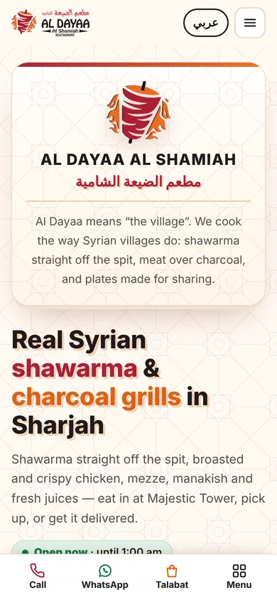
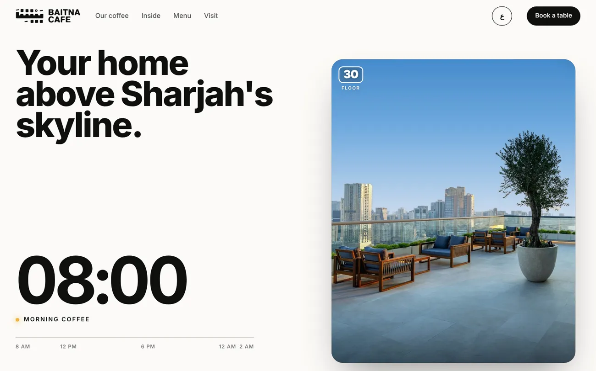
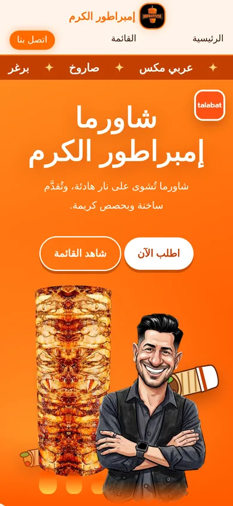
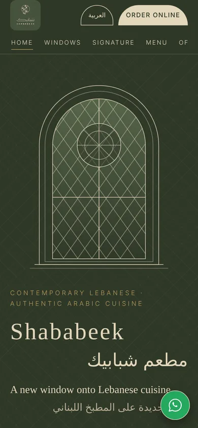
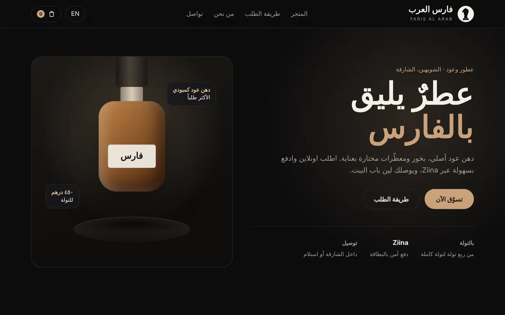
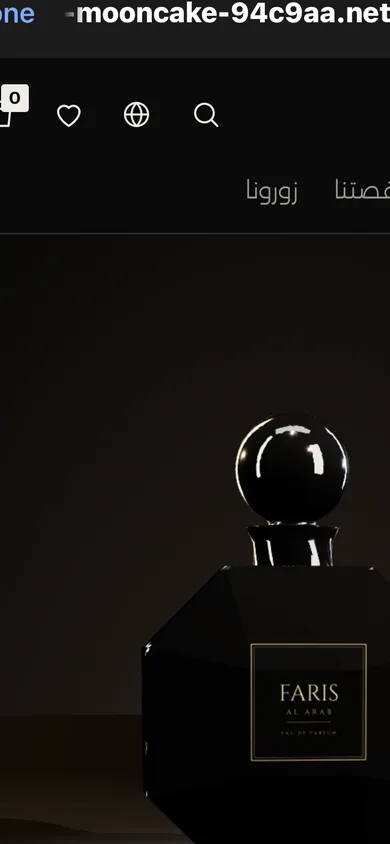
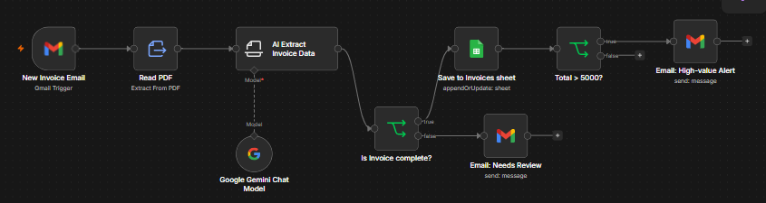

Al Dayaa Al Shamiahمطعم الضيعة الشامية
Syrian · Al KhalidiyaA bilingual site for a Syrian restaurant, built around its real logo and dishes.
- Searchable menu
- WhatsApp ordering
- Call & Talabat bar on phones
Abdullah Waleed Khalid · Web designer & automation builder
I design bilingual websites for restaurants, cafés and local shops, and I build AI tools that take repetitive work off their hands, like reading invoices or answering staff questions.
Real websites I designed and built for restaurants, cafés and shops in Sharjah. These are screenshots of the actual sites.
These are concept designs I made for practice and to show my skills. They are not the official websites of these businesses, and I am not affiliated with them. All names, logos and photos belong to their owners.

A bilingual site for a Syrian restaurant, built around its real logo and dishes.

A scroll story: a clock moves from morning coffee to late night as you scroll down the page.

A bold Arabic site with a spinning 3D shawarma spit next to a caricature of the owner.

A full Arabic and English site for a Lebanese restaurant, switched with one button.


An online shop for an oud and perfume store, with an interactive 3D perfume bottle that opens when you click it.
Two projects where AI does real work for a business: a private assistant for a clinic, and a system that processes invoices on its own.
An assistant that answers staff questions about prices and opening hours, without patient data ever leaving the clinic.
Built as a demo for a fictional clinic. Shown as a recording because it runs offline.

Three n8n workflows that read supplier invoices from email, pull out the data with AI and keep the expense sheet up to date.
Clean sites that work on phones, tablets and computers, with clear pages and buttons people find easily.
Arabic is my first language. I build right-to-left layouts properly, with Arabic fonts and a clean switch to English.
Private assistants that answer from your own information, set up with Qwen and Ollama or connected to AI APIs.
I connect Gmail, Google Sheets and AI models with n8n, so routine tasks run on their own.
Before web design, I worked a year in customer service, a year in data entry, and part-time as event staff. That work showed me how small businesses run day to day, and it is why I like building tools that save people time.
I graduated from Grade 12 in the Advanced stream at Al Ahlia Charity School, Dubai, with 97.1%. I'm looking to join an agency or company where I can grow in web design, AI or automation, and I'm open to freelance projects.
Hiring, or need a website or an automation for your business? Send me an email.
uae0502049070@gmail.com